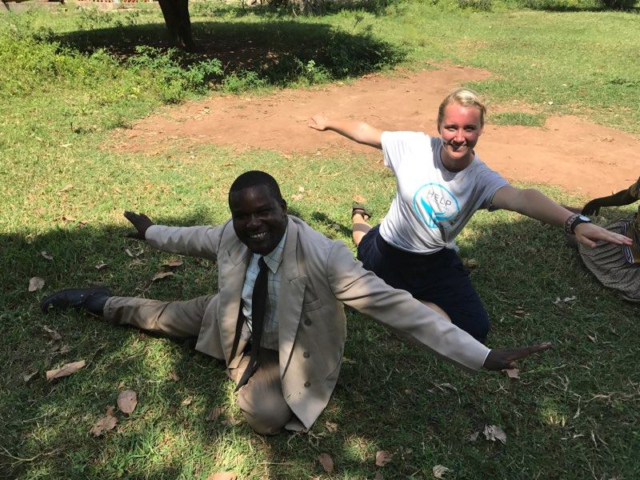

Born in 1982,
to Oluka Emmanuel and Imalingat Marguret, Oluka Charles is the eldest of six children. He was born and raised in the Kumi District of Uganda in the village of Apuda. Living in a worn-down grass house and wearing nothing but old, ragged clothes, Charles and his siblings witnessed firsthand the effects of poverty. His parents made a small income by working in the houses of other people, but the revenue was insubstantial enough to make them the poorest family in the village. Basic needs such as food and shelter were not available because of their poverty, and things like education and medical care were even farther out of reach. There was a lack of community towards their impoverished family, and the people in their village looked down on them. “When I grew up, I was laughed at by almost everyone; nobody wanted to be friends with me,” Charles recounted.



Searching for a way to survive,
Charles considered the possibility of stealing. However, he was reminded of the value of living a Christ-like life while attending church, and he abandoned the idea. “I learned that you should work hard with your hands to earn a living and trust in God to bless you,” he said. Unfortunately, even though Charles was regularly attending church, his family was still struggling. Because of intense stress and lack of nutrition, both of his parents developed chronic ulcers, respiratory problems, and mental health problems. These issues led to their deaths in 2003 and 2004, leaving Charles as the caretaker for his five siblings. The weight of his responsibilities and the pressure to take care of his siblings caused Charles to contemplate running away, as well as thinking about ending his own life.
During these struggles,
Charles was able to begin attending primary school when he was eleven years old. Despite beginning school later than most children, he did very well in his classes and eventually passed the test necessary to continue into secondary education. Even from this early stage in his life, Charles was aware of the importance of looking for sustainable ways to create revenue. Using what little money he had, he bought three chickens. He managed them so well that he was able to increase the number of chickens to thirty within two years. With this money, as well as money that he made in other ways, Charles was able to make it through secondary education and was awarded the UCE Paper, which qualified him for higher education such as university.
While taking a break from school to save more money,
Charles met Acom Scholarstica, a woman who, like him, had finished secondary education but didn’t have money to attend university. “You can see the chain of poverty and suffering,” Charles said about the marriages of people in poverty. The couple struggled together for about a year before positive change came their way. Somehow, a woman named Janet Strong from Canada had heard of Charles and his circumstances, and she decided to sponsor his education. Charles then had the opportunity to pursue a three-year degree in Theology and Bible Studies. After that, Garry System, also from Canada, sponsored Charles’s education and he was able to attend the Pan Africa Christian University in Nairobi, Kenya for three years. Then, from 2006-2008, he studied Development Studies with an emphasis in Community Mobilization in Soroti, Uganda. In regards to the education he was able to receive, Charles said, “I could not imagine having all those certificates. Two things brought my success: 1) God himself remembered me in my suffering, and 2) my strong passion, commitment and willingness to pursue my studies despite the cocoon of poverty.”

Empowered by his education,
Charles made a goal to help his community reduce its amount of poverty. “Poverty makes one powerless; it brings shame and deprives one of his or her fundamental rights. I saw in my life how poverty can negatively affect the life of a child; how it can enslave parents. I saw how a mother and father can be stressed to think day and night about their children and their own lives. I saw how poverty brings shame and dishonor to a family and people in general—poverty causes suffering and death.” With the dream of a local non-governmental organization (NGO) that would target poverty, Charles was able to create a desire for change within the Kumi district. Charles’s efforts can be seen in the Keep Alive Missionary Ministries, an NGO in Kumi that has the goal of eliminating poverty and the struggles that come with it.
Currently, there are thirty local groups, consisting mainly of orphans and women,
hat are part of KAMM. The majority of people who participate in KAMM are impoverished, and many are HIV positive. These groups are given knowledge and skills that help them to better understand how to fight poverty, and they put this information to use through different projects. Charles’s approach to eliminating the cocoon of poverty is unique. “Looking at the levels of poverty in Uganda, you can see that it is not caused by one or two single issues; it is caused by many factors. Therefore, the interventions that are meant to lift people out of it should also be multifaceted.” With this belief in mind, Charles and all of KAMM are working to lift people out of poverty through education and empowerment, and a significant change in the Kumi district is already in process.
Want to Help?
Because we are a volunteer staffed organization that works part time, we often do not have the sufficient funds or expert partnerships to effectively teach empowerment classes.